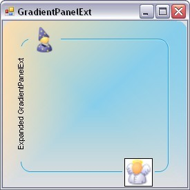

The GradientPanelExt is an enhanced version of the GradientPanel control. The GradientPanelExt borders can be rounded to any extent as needed. The control also supports hosting of primitives, in any of the panel borders. These primitives cover a wide range from text to any .NET control. The gradient colors applied to the GradientPanelExt apply to the primitives as well. These are no limitations on the number of these primitives.

Figure 397: GradientPanelExt with Primitives
See also
 Features Overview
Features Overview